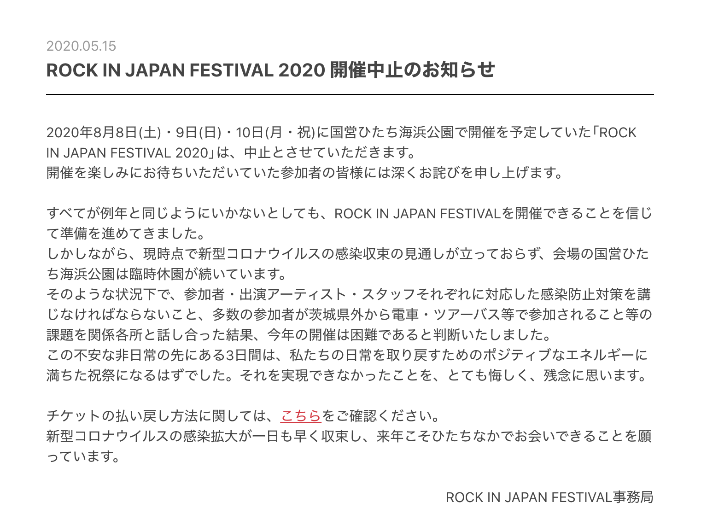

<!DOCTYPE html>
<html>
  <head>
    <meta charset="UTF-8">
    <title>株式会社フェス大好き代表取締役社長佐藤の言葉</title>
    <link rel="shortcut icon" href="favicon.ico">
    <link rel="stylesheet" href="stylesheet2.css">
  </head>
</html>
<body>
  <div class="meessage-wrapper">
    <div class="messege-title">
      <h1>株式会社フェス大好き代表取締役社長佐藤の言葉</h1>
      <div class="message-false">
        <h3>皆さんはこのショッキングなニュースを覚えているだろうか…</h3>
        
        <p>そう、かの日本三大ロックフェス、ROCK IN JAPAN FESTIVAL 2020の中止のニュースである。<br>音楽好きとしては、島田紳介が電撃引退した時と同じくらい衝撃である。</p>
        <h3>皆こう思ったに違いない…</h3>
        <ul>
          <li>俺たちの夏はどこにいったんだぁ！</li>
          <li>これから何を糧に生きていけばいいの…</li>
          <li>コロナさんよぉ、これ以上幸せを奪わないでくれぇ</li>
        </ul>
      </div>
      <div class="message-true">
        <p>そんな日本中が悲しみで溢れる中、少しでも気を紛らわそうとこの私、佐藤佑哉が開催する（したい）のが、このSepteni Rock Festivalである！！
        <br>見てください、自分が好きなだけ好きなアーティストを選べる自由さ！この世界なら何だって出来てしまうんです。
        <br>「もしこんなメンバーでフェスが開催されたら…」「あらゆるライブ、フェスが中止になってそろそろ禁断症状がでそうでヤバイ」
        <br>わかります、皆さん外に出れずにストレス溜まってますよね？そんな時は自分で好きなことを描いてしまいましょう！
        <br>そんなゆうやの、ゆうやによる、ゆうやのための、妄想でしかないフェスが今開催される…！！！</p>
      </div>
      <h4 align="right">株式会社フェス大好き代表　佐藤佑哉</h4>
    </div>
  </div>
</body>
